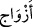
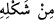
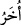
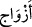

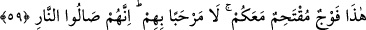
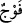
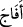
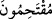
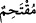
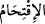
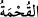
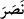
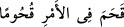
olan (__WORD__) ikinci mübtedâ; “benzer” mânâsına gelen (__WORD__) ise “ezvâc”ın haberi; bu
mübtedâ-haber cümlesi de birinci mübtedânın yâni (__WORD__) kelimesinin haberidir.
(__WORD__), cinsler demektir. Çünkü birkaç türlü azâbın olması mümkündür. Yâni bu azab
çeşit çeşit olmakla birlikte azab tattırma ve elem vermede hepsi biribirine benzer,
demektir.
et-Te’vîlâtü’n-Necmiyye’de der ki: “Buna benzer daha türlü türlü başkaları”
ifâdesiyle Allah Teâlâ, her bir mâsiyet çeşidi için bir azap çeşidi olduğuna işâret
ediyor. Tıpkı çiftçilerin toprağa ektikleri tohumlar ile bunlardan çıkan ürünlerin
biribirine denk düşmesi gibi.
Eğer kulak verirsen, işte bu kadardır ve yeterlidir,
Çünkü diken ekersen, yasemin çiçeği deremezsin.
59. (İnkârcıların reislerine:) İşte bu sizinle beraber cehenneme girecek
topluluktur (denildiğinde, reisler:) Onlar rahat yüzü görmesin (derler). Onlar
mutlaka ateşe gireceklerdir.
(__WORD__), bir grup, bir bölük insan demektir. (Aynı kökten olan) (__WORD__) fiili de seğirtti, koştu
anlamındadır.
Râğıb der ki: (__WORD__), hızla akın akın giden bir grup demektir. Bu, lâfız itibariyle müfred
bir kelime olduğu için cemi bir kelime olan (__WORD__) değil de (__WORD__) ile tavsif
edilmiştir. (__WORD__) ise bir şeye şiddet ve meşakkatle girmek demektir. (__WORD__) lâfzı da
şiddet (sıkıntı, kıtlık) anlamındadır.
el-Kâmûs’ta da şöyle der: (__WORD__) babından olmak üzere, (__WORD__) demek,
gözünü budaktan sakınmaksızın kendini ansızın atmak demektir.
Âyetin anlamı şöyledir: Cehennem görevlileri bu azgınlar cehenneme girdiklerinde
kendilerinin sapıtmış olduğu tâbîlerini göstererek “(inkârcıların reislerine:) İşte bu”
daha önce -kendi hür irâdeleri ile- inkâr ve dalâlette sizin peşinizden geldikleri gibi şu
anda -mecbûren- sizin peşinizden gelen tâbileriniz! Bakınız, aranızda herhangi bir
yardımlaşma yok, aranızdaki dostluk ve sevgi düşmanlığa dönüşmüş! Onlar “sizinle
beraber cehenneme girecek topluluktur” (denildiğinde)…”
Denir ki: Zebânîler, efendileri de tabileri de kırbaçlarlar, onlar da bu kırbaçlardan
korkup cehenneme düşerler. İşte âyetteki zorla girmek anlamına gelen “iktihâm”ın
anlamı budur. Bunlar sizinle birlikte zorla cehenneme girmişlerdir. Hırs ve arzu ile bir